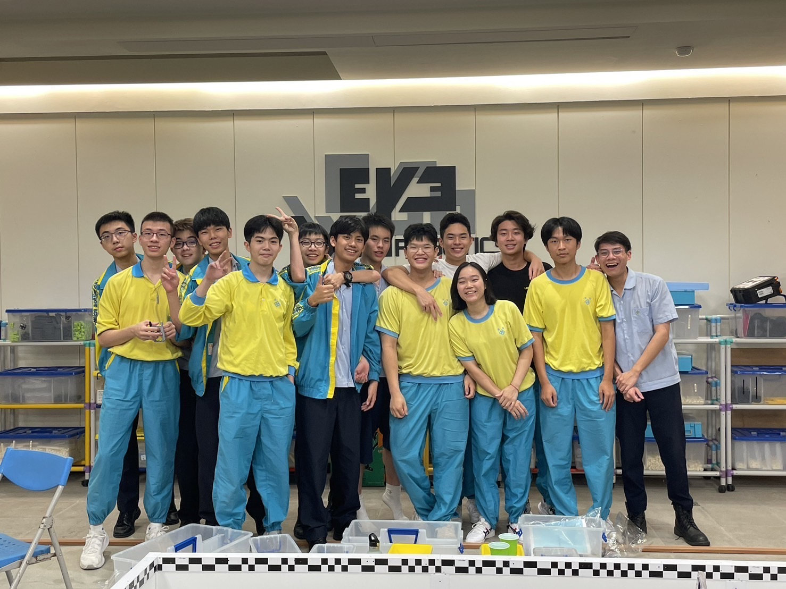

最新消息
活動預告
關於我們
WEGO Robotics Club 是一個由熱愛機器人與人工智慧的學生組成的團隊，致力於從零開始設計、製作與程式開發各類機器人，並積極參加國內外各大競賽。我們的成員來自不同年級與背景，但共享著同樣的信念——透過創意與工程實踐，讓機器人成為解決真實世界問題的工具。 社團每年會挑戰多種比賽，包括 VEX Robotics、RoboFest 等，成員需要參與機構設計、3D 建模、電路整合、感測器應用與程式編寫。我們不僅注重技術，更重視團隊協作與專案管理，從最初的構想，到測試與優化，每一步都需要精密規劃與溝通。 除了比賽，我們也推動校內 STEM 教育，舉辦講座與工作坊，鼓勵低年級同學接觸機器人科技，並嘗試將 AI 與自動化技術融入專案。我們相信，機器人不只是競賽工具，而是通往未來的橋樑。 WEGO Robotics Club 的精神是 「解決問題、挑戰極限、創造未來」——這裡不只是學習技術的地方，更是一個讓想法成真的舞台。